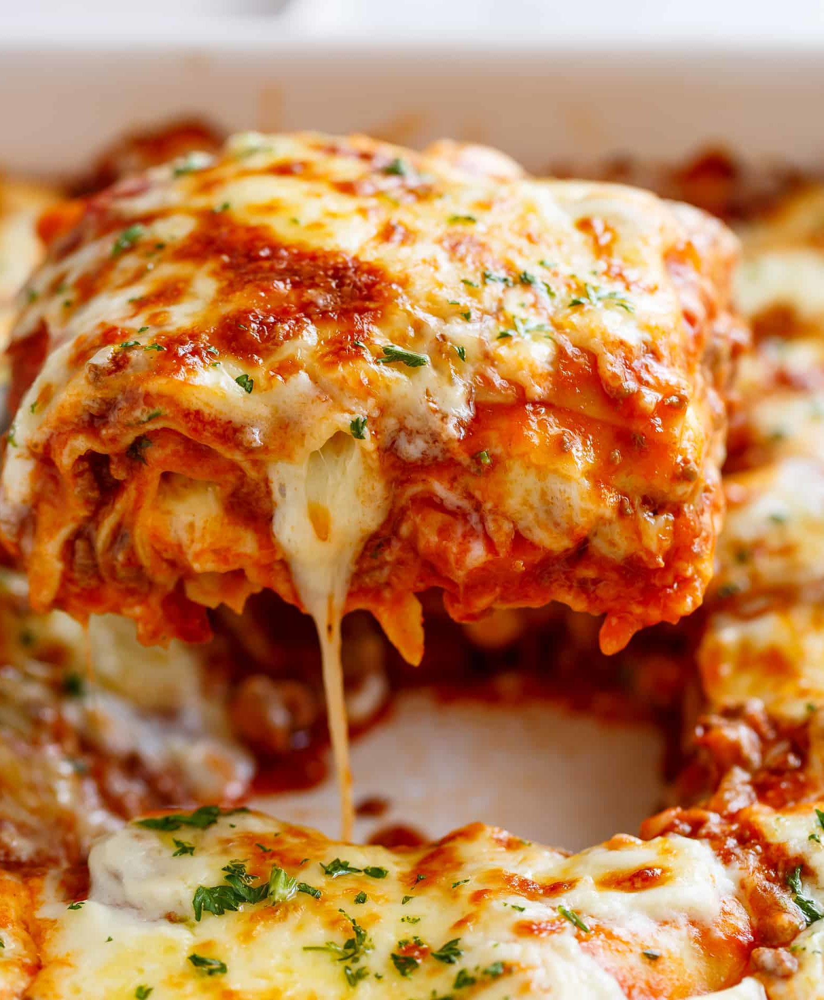

Lasagna
Return to homepage

Lasagna needs no explanation -- it's just awesome.
Ingredients
- 2 tbsp olive oil
- 1 onion, diced
- 2 carrots, grated
- 6 cloves garlic, minced
- 1 lb mild italian sausage
- 1 lb spicy italian sausage
- 1 can tomato paste
- 1 cup red wine
- 2 28-oz cans crushed tomatoes
- 1 tbsp italian seasoning
- lasagna noodles
- 1 container ricotta cheese
- 1 egg
- 16 oz mozarella cheese, shredded
Directions
-
Make the sauce: Heat olive oil in a stockpot over medium heat until shimmering. Add onion, carrot, garlic, italian sausage,
and italian seasoning. Cook, stirring frequently, until sausage is browned, about 10 minutes. Add tomato paste and stir into other ingredients.
Add red wine and reduce by half (1-2 minutes), scraping up any browned bits on the bottom of the pan. Add both cans of crushed tomatoes, reduce heat,
and simmer for 20-30 minutes. Adjust seasonings to taste.
-
Assemble lasagna: Whisk together ricotta cheese and egg until full combined. Spoon a small amount of the sauce into the bottom
of a 9x13 pan. Add a layer of lasagna noodles (no need to pre-cook them, they will cook fine in the oven!). Top with 1/3 of the ricotta mixture
spread in an even layer. Next, add a layer of tomato sauce. Sprinkle 1/4 of the mozarella on top, then add another layer of noodles.
Continue layering until the pan is filled, ending with a layer of mozarella cheese. Bake in a 375 degree oven for 20 minutes.
Let stand for 20-30 minutes for the lasagna to set before cutting and serving.
Return to homepage